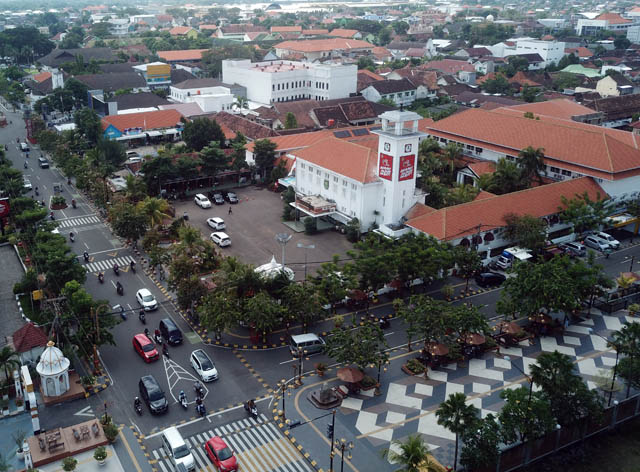

Kota Pendekar di jantung Jawa Timur.

Kota Madiun adalah sebuah kota di Provinsi Jawa Timur, Indonesia, yang terletak sekitar 160 km sebelah barat Surabaya dan 111 km sebelah timur Surakarta. Kota ini dijuluki Kota Pendekar karena merupakan pusat perguruan silat besar seperti PSH Terate dan PSH Winongo, serta dijuluki Kota Gadis (Gula, Adi, dan Bisnis) dan Kota Brem.
Dilalui jalur utama Surabaya–Yogyakarta dan rel kereta api selatan Jawa, Madiun menjadi kota transit yang ramai dengan kuliner legendaris dan suasana kota kecil yang nyaman.
Pusat perguruan silat PSH Terate dan PSH Winongo yang mendunia.
Rumah bagi pecel Madiun, brem, dan pentol corah yang legendaris.
Persimpangan jalur Surabaya–Solo–Yogyakarta dengan stasiun besar.